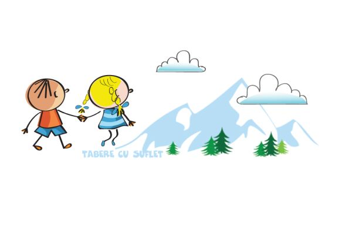

u mai puteti veni in Tabara? Cu optiunea Nu-Mai-Pot-Veni va puteti recupera Contributia, in cazul mai putin fericit in care nu mai puteti participa la un anumit Program.
Context
Conform art 14 (b) din Regulamentului Asociatiei (link), in cazul in care Participantul nu mai este interesat de participarea la Program, sau daca participarea la Program nu mai este posibila din diferite motive ce nu tin de Asociatie, sponsorul trebuie sa acopere integral plata Contributiei si sa ofere astfel altui participant posibilitatea de a participa la Program.
Cu toate acestea am cautat sa ajutam tot timpul pe cei aflati in aceasta situatie, incercand sa gasim de fiecare data cate un copil care sa vina in locul celui care nu mai putea veni. In paralel, am avut discutii cu mai multe firme de asigurare, ba chiar am gasit una care a creat un produs special pentru noi:) Din pacate insa, acesta s-a dovedit necorespunzator, deoarece nu functioneaza in cazul sponsorizarilor:(
Asa ca ne-am gandit sa procedam invers: sa incercam sa cream noi o varianta plecand de la nevoile noastre. Asa s-a nascut Optiunea Nu-Mai-Pot-Veni, o facilitate oferita prin programele WeCare ale Asociatiei Tabere cu Suflet si care speram sa fie o solutie de ajutor pentru toti parintii ce simt nevoia unei astfel de asigurari. Mai multe detalii
Cum functioneaza
La momentul inscrierii la un program al Asociatiei Tabere cu Suflet, puteti alege Optiunea Nu-Mai-Pot-Veni. Activarea optiunii presupune un cost suplimentar, in valoare de 10% din Contributia pentru Programul respectiv. Pentru activarea optiunii, plata trebuie facuta la momentul platii Contributiei.
In cazul producerii unui Eveniment in urma caruia Participantul nu mai poate să participe la Programul respectiv, daca a fost activata Optiunea, se poate recupera Contributia platita. Recuperarea poate fi sub forma de eVoucher sau prin plata in cont.
Cine
Pot beneficia de aceasta facilitate membrii Asociatiei Tabere cu Suflet.
Participantul este persoana care urmeaza sa participe la Program (care este menționat în contractul de sponsorizare ca Participant la Program) si care, in urma activarii Optiunii, devine persoana asigurata. Participantul poate fi copil sau adult.
Sponsorul este persoana care a incheiat contractul de sponsorizare, in general parintele sau persoana care a platit Contributia. In cazul in care are loc un Eveniment asigurat iar Optiunea este activa, acesta are dreptul sa recupereze Contributia.
Programe
Optiunea Nu-Mai-Pot-Veni acopera toate Programele mentionate in contractul de sponsorizare si care presupun o contributie pentru participare. Acestea pot fi:
• Tabere de Vara;
• Tabere de Schi si Snowboard;
• Weekend Activ;
• Competitii.
Evenimente
Evenimentul este o situatie aparuta in mod neasteptat, din motive în afara controlului Participantului, in urma careia acesta nu mai poate lua parte la Programul dorit. Optiunea Nu-Mai-Pot-Veni acopera urmatoarele tipuri de evenimente:
a) Evenimente competitionale: concursuri sportive, artistice sau scolare, olimpiade nationale sau internationale, recunoscute de Ministerul Educatiei sau Ministerul Sportului, la care participantul s-a calificat si urmeaza sa ia parte si care au loc in perioada de desfasurare a Programului;
b) Evenimente medicale: boli sau accidente ale Participantului, care implică spitalizare pe perioada Programului sau recomandare de repaus la domiciliu pe perioada Programului;
c) Evenimente pandemice: diagnosticarea Participantului cu COVID-19 sau o alta varianta a acestui virus, în urma căreia Participantul trebuie să fie spitalizat, izolat sau obligat sa stea in carantina pe durata Programului;
d) Evenimente familiale: decese in familie;
e) Evenimente materiale: incendii, inundatii sau alte daune materiale grave.
Mai multe detalii
Durata
Optiunea începe la data activarii și încetează cu 48 de ore inainte de data și ora inceperii Programului.
Valoare
Recuperarea poate fi sub urmatoarele forme:
a) eVoucher, caz in care Valoarea acestuia este egala cu valoarea Contributiei platite initial, pentru Programul ales. eVoucherul poate fi utilizat la un alt Program al Asociatiei Tabere cu Suflet.
b) Plata in cont, caz in care suma oferita ca despagubire este de 90% din Contributia platita pentru Programul ales initial. Plata se va face in contul Sponsorului care a platit Contributia.
Cost
Costul activarii Optiunii Nu-Mai-Pot-Veni reprezinta 10% din Contributia pentru Programul ales, fara a se lua in calcul eventualele reduceri.
Pentru activarea Optiunii, plata trebuie facuta in momentul platii Contributiei, iar daca sunt mai multe rate, in momentul platii primei rate.
Situatii ce nu pot fi acoperite
Sunt mai multe situatii ce nu pot fi acoperite de Optiunea Nu-Mai-Pot-Veni, cum ar fi, spre exemplu:
• In cazul în care Participantul participă la Program, indiferent de numărul de zile de participare.
• In cazul unui Program ProBono;
• In cazul în care Participantul beneficiaza de diferite reduceri prin programul WeCare;
• In cazul în care costul de activare este platit la o data ulterioara platii contributiei.
Mai multe detalii
Feedback & Disclaimer
Acesta nu este un produs al Asociatiei Tabere cu Suflet, fiind preluat de la Ramburs orice, un produs de asigurare construit intial pentru Asociatia noastra. Mai multe detalii
Produsul este unul nou, in stadiu Beta. Cu scuzele de rigoare pentru formularea specifica si termenii utilizati, preluati de la firma de asigurare, va rugam sa ne transmiteti orice feedback legat de acest produs. Indiferent daca este pozitiv sau negativ, va incurajam sa o faceti, căci ne ajutati astfel sa il dezvoltam si, in acelasi timp, sa luam ca mai buna decizie legata de acest aspect. Va multumim!